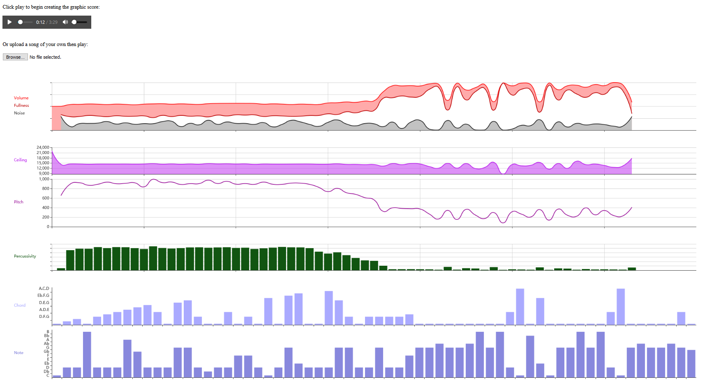
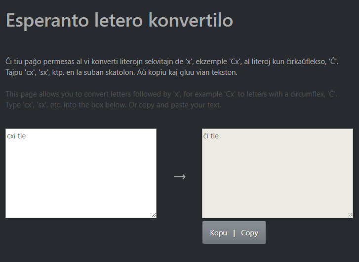

Wellsaid (30 Seconds clone)
This browser game can be played on your phone with friends. It's similar to the popular
word guessing game,
30 Seconds.
Graphic score generator (song visualiser)
This app will draw charts for you in realtime based on an mp3 you give it.
Use it to help with analysing a piece of music to understand its overall structure;
including volume, percussivity, and harmony.
(This app seems to be working only in Firefox in 2022, not in Chromium browsers, due to a
deprecation of the older web audio tools.)

Esperanto letero konvertilo (Esperanto letter converter)
This app will allow you to convert letters like ‘Cx’ to the Esperanto version with a circumflex, ‘Ĉ’.
It's useful for typing quickly on a Latin (English) keyboard, copying the text to the app to convert
it to proper Esperanto letters, and pasting back into your document.
